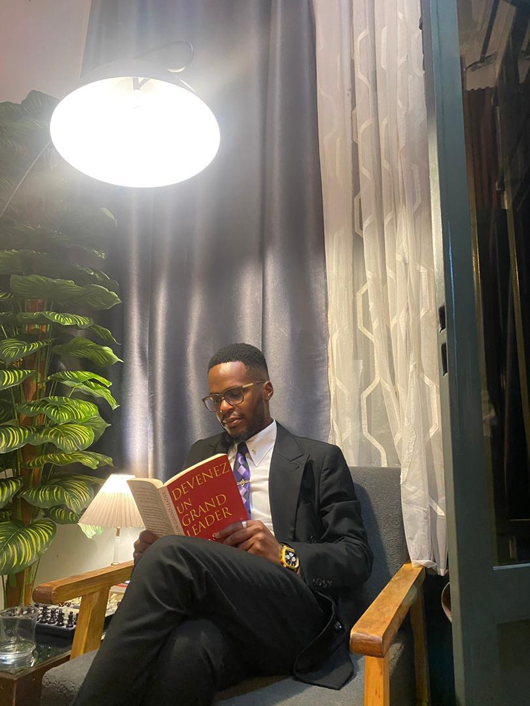

Derrière le projet, un binôme soudé
Deux parcours complémentaires, une même ambition : servir les étudiants avec humilité et efficacité.

NAMEGABE M. Josué
Issu des organes de base de la représentation estudiantine, Josué a gravi les échelons en écoutant et en agissant. Son parcours l’a amené à collaborer avec différents responsables, observant leurs méthodes et apprenant concrètement les rouages du leadership étudiant.
Sa conviction : « chaque étudiant mérite d’être écouté, représenté et impliqué ». Il porte une vision de service, loin du prestige personnel.
BIKUBANYA B. Lucien
Dynamique et rassembleur, Lucien a toujours œuvré pour l’unité entre facultés et la promotion de la vie associative. Il croit fermement que la culture et le sport sont des leviers puissants de cohésion sociale.
Son engagement : « être une voix crédible auprès des autorités académiques tout en restant proche de la base ». Il souhaite redynamiser le Collège des étudiants et créer des opportunités concrètes pour tous.
Ensemble, nous réhabiliterons le Collège des étudiants
Notre duo est né d’une amitié et d’une vision partagée : redonner au leadership étudiant sa véritable valeur de service. Transparence, solidarité et action continue – voilà ce que nous vous promettons.